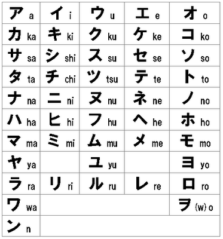
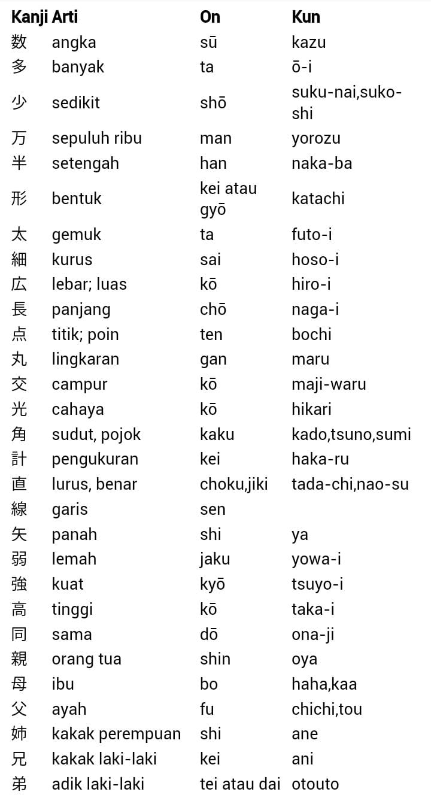
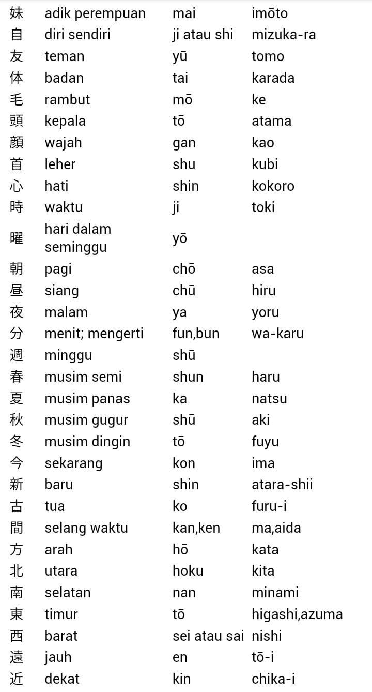
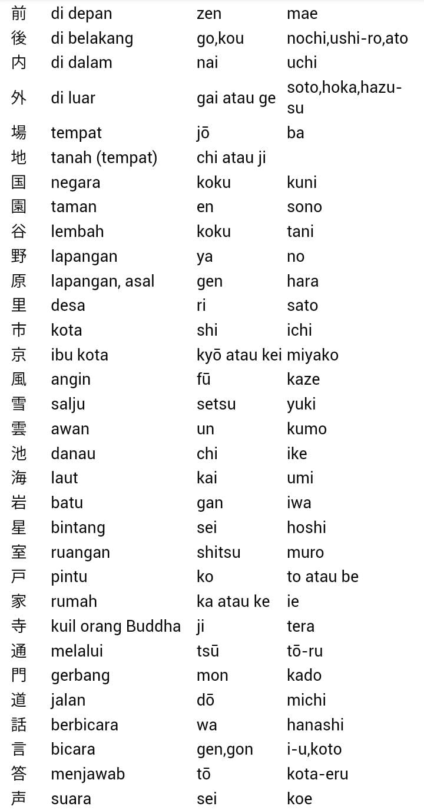
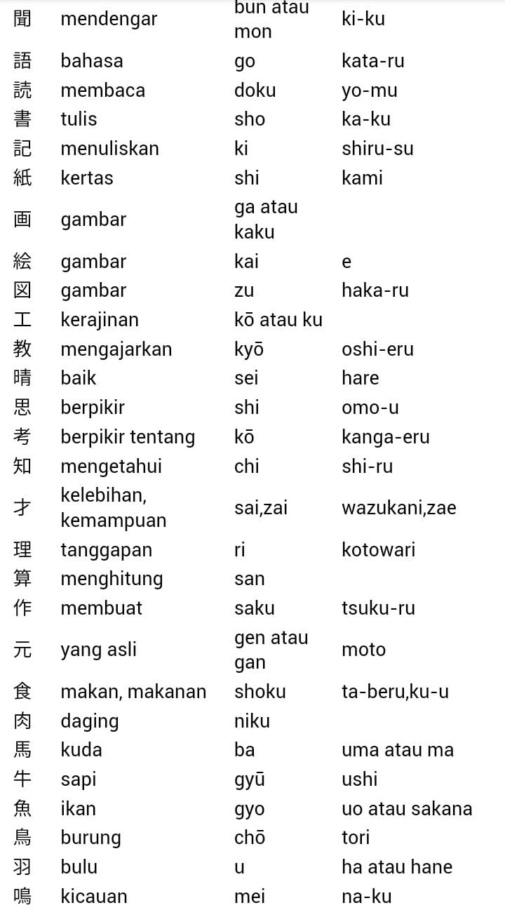
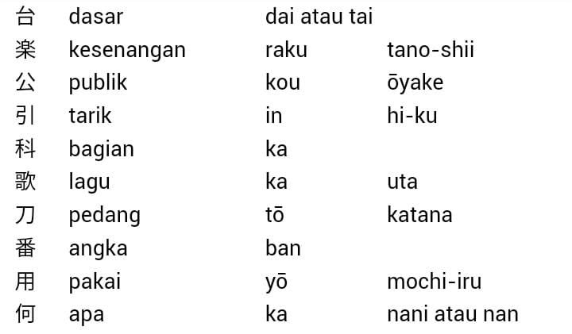

YUU JAPAN LEARNING
Chairul Iman
Bahasa Jepang memiliki tiga jenis huruf : Hiragana, Katakana dan Kanji. Hiragana dan katakana merupakan simbol fonetik, setiap hurufnya mewakili penyebutan satu suku kata. Sedangkan Kanji adalah ideogram, yang dipakai untuk menggambarkan makna dari setiap ujaran.
Web ini didasarkan pada pembelajaran bahasa jepang dari awal pemula sampai yang sudah mahir dalam bahasa jepang dengan menggunakan pembelajaran secara otodidak yang mencakup tentang aksara bahasa jepang, kosa kata, ucapan kalimat, kata bilangan, ungkapan waktu, kata bantu bilangan, konjungsi kata kerja, dll.
PENGENALAN
CIRI KHAS BAHASA JEPANG
1. Jenis Kata dalam bahasa jepang terdapat kata kerja, kata sifat, kata benda, kata keterangan, kata penghubung, partikel dan lain-lain.
2. Urutan Kata Partikel diletakkan pada akhir kalimat. Kata yang menerangkan diletakkan di depan kata yang diterangkan.
3. Predikat Yang menjadi predikat bahasa Jepang adalah Kata Kerja, Kata Sifat, dan Kata Benda. Predikat berubah bentuk sesuai dengan positif atau negatif, atau waktu lampau. Predikat tidak berubah bentuknya karena orang, jenis kelamin atau bilangan.
4. Partikel Pada belakang kata atau kalimat dipakai partikel. Partikel menunjukkan hubungan antara kata dan kata, atau berfungsi untuk membubuhkan berbagai arti.
5. Penghilangan Subjek atau objek kadang-kadang dihilangkan jika konteks kalimat dapat dipahami.
AKSARA BAHASA JEPANG
Aksara bahasa Jepang terdapat tiga jenis, yaitu Hiragana, Katakana, dan Kanji.
Hiragana dan Katakana adalah aksara silabis sedangkan Kanji adalah ideogram yang menunjukkan bunyi sekaligus artinya.
Bahasa Jepang biasanya ditulis bercampur dengan Hiragana, Katakana dan Kanji.
Nama warga asing, nama daerah atau kata serapan dari bahasa asing ditulis dengan Katakana.
Hiragana digunakan untuk penulisan pertikel atau bagian konjungsi Kata Kerja dan Kata Sifat.
LAFAL VOKAL
Bahasa Jepang baku mempunyai 5 huruf vokal yaitu /a/, /i/, /u/, /e/, dan /o/.
Lafal vokal bahasa Jepang baku mirip seperti bahasa Indonesia. Contohnya:
- /a/ seperti "bapak"
- /i/ seperti "ibu"
- /u/ seperti "peuyeum" dalam bahasa Sunda
- /e/ seperti "besok"
- /o/ seperti "obor"
PENULISAN BAHASA JEPANG
Sistem penulisan bahasa jepang berasal dari aksara Tionghoa (漢字/kanji) yang diperkenalkan pada abad ke-4 Masehi. Sebelumnya, orang Jepang tidak mempunyai sistem penulisan sendiri.
Sistem penulisan bahasa Jepang terbagi menjadi tiga :
- Kanji (かんじ / 漢字) yang berasal dari Tiongkok
- Hiragana (ひらがな / 平仮名) dan
- Katakana (カタカナ / 片仮名); keduanya berunsur dari aksara kanji dan dikembangkan pada abad ke-8 Masehi oleh rohaniawan Buddha untuk membantu melafalkan aksara-aksara Tionghoa.
Kedua aksara terakhir ini biasa disebut kana dan keduanya terpengaruh fonetik Bahasa Sanskerta. Hal ini bisa dilihat dari urutan aksara Kana. Selain itu, ada juga sistem alih aksara yang disebut romaji.
Bahasa Jepang yang kita kenal sekarang ini, ditulis dengan menggunakan kombinasi aksara Kanji, Hiragana, dan Katakana. Kanji dipakai untuk menyatakan arti dasar dari kata (baik berupa kata benda, kata kerja, maupun kata sifat). Hiragana ditulis sesudah kanji untuk mengubah arti dasar dari kata tersebut, dan menyesuaikan dengan peraturan tata bahasa Jepang.
KANA
Aksara Hiragana dan Katakana (kana) memiliki urutan seperti dibawah ini, memiliki 46 set huruf masing-masing.
Keduanya (Hiragana dan Katakana) tidak memiliki arti apapun, seperti abjad dalam Bahasa Indonesia, hanya melambangkan suatu bunyi tertentu,
meskipun ada juga kata-kata dalam bahasa Jepang yang terdiri dari satu 'suku kata', seperti me (mata), ki (pohon), ni (dua), dsb.
Abjad ini diajarkan pada tingkat pra-sekolah (TK) di Jepang.
KANJI
Banyak sekali kanji yang diadaptasi dari Tiongkok, sehingga menimbulkan banyak kesulitan dalam membacanya.
Dai Kanji Jiten adalah kamus kanji terbesar yang pernah dibuat, dan berisi 30.000 kanji. Kebanyakan kanji sudah punah,
hanya terdapat pada kamus, dan sangat terbatas pemakaiannya, seperti pada penulisan suatu nama orang.
Oleh karena itu, Pemerintah Jepang membuat suatu peraturan baru mengenai jumlah aksara kanji dalam Joyō Kanji atau kanji sehari-hari yang dibatasi penggunaannya sampai 1945 huruf saja. Aksara kanji melambangkan suatu arti tertentu. Suatu Kanji dapat dibaca secara dua bacaan, yaitu Onyōmi (adaptasi dari cara baca China) dan Kunyōmi (cara baca asli Jepang). Satu kanji bisa memiliki beberapa bacaan Onyomi dan Kunyomi.
TANDA BACA
Dalam kalimat bahasa Jepang tidak ada spasi yang memisahkan antara kata dan tidak ada spasi yang memisahkan antara kalimat.
Walaupun bukan merupakan tanda baca yang baku, kadang-kadang juga dijumpai penggunaan tanda tanya dan tanda seru di akhir kalimat.
Tanda baca yang dikenal dalam bahasa Jepang:
- 。(句点/kuten) Fungsinya serupa dengan tanda baca titik yakni untuk mengakhiri kalimat.
- 、(読点/toten) Fungsinya hampir serupa dengan tanda baca koma yakni untuk memisahkan bagian-bagian yang penting dalam kalimat agar lebih mudah dibaca
ANGKA DAN SISTEM PENGHITUNGAN
Bangsa Jepang pada zaman dahulu (dan dalam jumlah yang cukup terbatas pada zaman sekarang)
menggunakan angka-angka Tionghoa, yang lalu dibawa ke Korea dan sampai ke Jepang.
Berikut ini adalah daftar angka-angka Jepang.
一 Ichi 1 二 Ni 2 三 San 3 四 Yon 4 五 Go 5 六 Roku 6 七 Nana 7 八 Hachi 8 九 Kyū 9 十 Jū 10
HURUF KATAKANA DAN HIRAGANA
HIRAGANA
Hiragana (Kana: ひらがな; Kanji: 平仮名) adalah suatu cara penulisan[1]bahasa Jepang dan mewakili sebutan sukukata.
Pada masa silam, ia juga dikenali sebagai onna de (女手) atau 'tulisan wanita' karena biasa digunakan oleh kaum wanita.
Kaum lelaki pada masa itu menulis menggunakan tulisan Kanji dan Katakana. Hiragana mulai digunakan secara luas pada abad ke-10 Masehi.
DAFTAR HURUF HIRAGANA DALAM BAHASA JEPANG
.jpg)
berikut adalah beberapa kegunaan huruf katakana dalam penulisan bahasa Jepang.
- Menulis akhiran kata (okurigana, 送り仮名). Contoh: okuru (mengirim) ditulis: 送る. Yang bercetak tebal itulah okurigana.
- Menulis kata keterangan (adverb), beberapa kata benda (noun) dan kata sifat (adjektif).
- Perkataan-perkataan yang penulisan Kanji-nya tidak diketahui atau sudah lama tidak digunakan.
- Menulis bahan bacaan anak-anak seperti buku teks, animasi dan komik (manga).
- Menulis furigana, dikenal juga dengan rubi, yaitu teks kecil di atas kanji, yang menandakan bagaimana suatu kata dibaca.
Misalnya:
べんきょう
勉強 する
KATAKANA
Katakana merupakan salah satu jenis huruf yang memiliki kegunaan tertentu dalam tatanan penulisan bahasa Jepang.
Jenis huruf ini termasuk ke dalam simbol fonetik di mana setiap hurufnya mewakili penyebutan satu suku kata.
Dalam materi pembelajaran bahasa Jepang, huruf katakana biasanya dipelajari setelah seseorang menguasai huruf hiragana.
Untuk lebih memahaminya, simak daftar huruf katakana beserta kegunaannya dalam ulasan berikut ini.
DAFTAR HURUF KATAKANA DALAM BAHASA JEPANG

Huruf katakana sendiri sudah dikenal sejak abad ke-9, ketika biksu Buddha membuat huruf fonetik untuk menyederhanakan bacaan
dari karakter tulisan Tiongkok. Pada perkembangan selanjutnya, huruf katakana mulai digunakan untuk beberapa bentuk penulisan.
berikut adalah beberapa kegunaan huruf katakana dalam penulisan bahasa Jepang.
berikut adalah beberapa kegunaan huruf katakana dalam penulisan bahasa Jepang.
1. Menulis kata serapan dari bahasa asing
Dalam bahasa Jepang, ada berbagai bentuk kosakata yang merupakan serapan dari bahasa asing.
Untuk menulis kata-kata serapan tersebut, orang Jepang menggunakan huruf katakana.
Misalnya, Taxi ditulis タクシー (Takushii), Hotel ditulis ホテル (Hoteru) , dan sebagainya.
2. Menulis onomatope
Onomatope merupakan kata tiruan suatu bunyi yang biasanya terdapat pada cerita komik (manga).
Kata ini sebenarnya juga banyak ditemukan dalam kehidupan sehari-hari. Untuk menulis kata onomatope,
huruf yang dapat digunakan adalah katakana.
Misalnya, deg-degan dalam bahasa Jepang adalah
ドキドキ (doki-doki), suara perut kosong atau lapar adalah ペコペコ (peko peko) , bunyi bel ピンポン (pin pon), dan sebagainya.
3. Menulis nama orang non-Jepang
Huruf katakana juga digunakan untuk menulis nama orang asing (bukan nama asli Jepang).
Misalnya, nama Andi ditulis アンディ, Sinta ditulis シンタ, dan sebagainya.
4. Menulis nama tempat di luar Jepang
Kegunaan terakhir huruf katakana adalah untuk menulis nama kota, negara, atau tempat yang berada di luar Jepang.
Misalnya, Indonesia ditulis インドネシア, Jakarta ditulis ジャカルタ, dan lain-lain.
KAMUS KOSAKATA
KOSAKATA BAHASA JEPANG KE INDONESIA
Jika kamu berencana untuk belajar bahasa Jepang, maka kamu terlebih dahulu harus mengetahui kosakata bahasa Jepang yang digunakan dalam percakapan sehari-hari.
Dikutip dari buku Marugoto: Bahasa dan Kebudayaan Jepang oleh Japan Foundation, berikut ini kumpulan kosa kata bahasa Jepang beserta artinya dalam bahasa Indonesia.
KOSAKATA BAHASA JEPANG TENTANG PEKERJAAN
Berikut ini kosa kata seputar pekerjaan dalam bahasa Jepang beserta artinya.
1. いしゃ: isha (dokter)
2. かいしゃいん: kaishain (pegawai perusahaan)
3. エンジニア: enjinia (teknisi)
4. かいごし: kaigoshi (perawat lansia)
5. きょうし: kyooshi (guru)
6. かんごし: kangoshi (perawat)
7. こうむいん: koomuin (pegawai negeri)
8. じえいぎょう: jieegyoo (wiraswasta)
9. しゅふ: shufu (ibu rumah tangga)
10. のうか: nooka (petani)
11. アルバイト（バイト: arubaito (pekerjaan paruh waktu)
12. がくせい: gakusee (pelajar/siswa)
KOSAKATA BAHASA JEPANG TENTANG SEKOLAh
Simak kumpulan kosa kata Bahasa Jepang ke Indonesia tentang sekolah berikut ini.
1. がっこう: gakoo (sekolah)
2. クラス: kurasu (kelas)
3. いす: isu (kursi)
4. つくえ: tsukue (meja)
5. えんぴつ: enpitsu (pensil)
6. ノート: nooto (buku tulis)
7. きょうかしょ: kyookasho (buku pelajaran)
8. じしょ: jisho (kamus)
9. けいたいでんわ: keetai-denwa (handphone)
10. コンピューター: konpyuutaa (komputer)
11. ホワイトボード: howaito-boodo (papan tulis putih)
12. けしごむ: keshigomu (karet penghapus)
13. ペン: pen (pulpen)
14. べんきょう（を）します: benkyoo shimasu (belajar)
15. かきます: kakimasu (menulis)
16. よみます: yomimasu (membaca)
17. ききます: kikimasu (mendengar)
18. はなします: hanashimasu (berbicara)
19. せつめい（を）します: setsumee (o) shimasu (menerangkan)
20. しつもん（を）します: shitsumon (o) shimasu (bertanya)
KOSAKATA BAHASA JEPANG TENTANG KELUARGA
Berikut ini beberapa kosakata bahasa Jepang mengenai keliuarga beserta artinya.
1. かぞく: kazoku (keluarga)
2. りょうしん: orang tua
3. ちち: chichi (bapak)
4. はは: haha (ibu)
5. あに: ani (kakak laki-laki)
6. あね: ane (kakak perempuan)
7. おとうと: otooto (adik laki-laki)
8. いもうと: imooto (adik perempuan)
9. おっと: otto (suami)
10. こども: kodomo (anak)
KOSAKATA BAHASA JEPANG TENTANG BINATANG
Simak kosakata bahasa Jepang tentang nama-nama binatang berikut ini.
1. ねこ: neko (kucing)
2. いぬ: inu (anjing)
3. うさぎ: usagi (kelinci)
4. とり:tori (burung)
5. ハツカネズミ: hatsukanezumi (tikus)
6. きんぎょ: kingyo (ikan emas)
7. ハムスター: hamusutaa (hamster)
KOSAKATA BAHASA JEPANG TENTANG MAKANAN
Berikut ini kumpulan kosa kata bahasa Jepang ke Indonesia tentang nama-nama makanan yang sering digunakan dalam percakapan sehari-hari.
1. たべもの: tabemono (makanan)
2. ごはん／ライス: gohan (nasi)
3. パン: pan (roti)
4. さかな: sakana (ikan)
5. にく: niku (daging)
6. チーズ: chiizu (keju)
7. たまご: tamago (telur)
8. やさい: yasai (sayuran)
9. トマト: tomato (tomat)
10. じゃがいも: jagaimo (kentang)
11. にんじん: ninjin (wortel)
12. すいか: suika (semangka)
13. バナナ: banana (pisang)
14. りんご: ringo (apel)
15. レモン: remon (lemon)
16. アイスクリーム: aisu-kuriimu (es krim)
17. あめ: ame (permen)
18. のり: nori (rumput laut)
Nah, itulah beberapa kosa kata dalam bahasa Jepang ke Indonesia yang bisa menjadi referensi untuk memulai percakapan dalam bahasa Jepang. Semoga informasi ini bermanfaat.
PENGENALAN KANJI
Kanji (漢字), secara harfiah berarti "aksara dari Han", adalah aksara Tionghoa yang digunakan dalam bahasa Jepang.
Kanji adalah salah satu dari empat set aksara yang digunakan dalam tulisan modern Jepang selain kana (katakana, hiragana) dan romaji.
Kanji dulunya juga disebut mana (真名) atau shinji (真字) untuk membedakannya dari kana.
Aksara kanji dipakai untuk melambangkan konsep atau ide (kata benda, akar kata kerja, akar kata sifat, dan kata keterangan).
Sementara itu, hiragana umumnya dipakai sebagai okurigana untuk menuliskan infleksi kata kerja dan kata-kata yang akar katanya ditulis
dengan kanji, atau kata-kata asli bahasa Jepang. Selain itu, hiragana dipakai menulis kata-kata yang sulit ditulis dan diingat bila ditulis
dalam aksara kanji. Kecuali kata serapan, aksara kanji dipakai untuk menulis hampir semua kosakata yang berasal dari bahasa Tionghoa maupun bahasa Jepang.
SEJARAH
Secara resmi, aksara Tionghoa pertama kali dikenal di Jepang lewat barang-barang yang diimpor dari Tionghoa melalui Semenanjung Korea mulai abad ke-5 Masehi.
Sejak itu pula, aksara Tionghoa banyak dipakai untuk menulis di Jepang, termasuk untuk prasasti dari batu dan barang-barang lain.
Sebelumnya di awal abad ke-3 Masehi, dua orang bernama Achiki dan Wani datang dari Baekje pada masa pemerintahan Kaisar Ōjin.
Keduanya konon menjadi pengajar aksara Tionghoa bagi putra kaisar.[1] Wani membawa buku Analek karya Kong Hu Chu dan buku pelajaran
menulis aksara Tionghoa untuk anak-anak dengan judul Seribu Karakter Klasik.[2] Walaupun demikian, orang Jepang mungkin sudah mengenal
aksara Tionghoa sejak abad ke-1 Masehi. Di Kyushu ditemukan stempel emas asal tahun 57 Masehi yang diterima sebagai hadiah dari Tiongkok
untuk raja negeri Wa (Jepang).
Dokumen tertua yang ditulis di Jepang menurut perkiraan ditulis keturunan imigran dari Tiongkok.
Istana mempekerjakan keturunan imigran dari Tiongkok bekerja di istana sebagai juru tulis.
Mereka menuliskan bahasa Jepang kuno yang disebut yamato kotoba dalam aksara Tionghoa.
Selain itu, mereka juga menuliskan berbagai peristiwa dan kejadian penting.[2]
Sebelum aksara kanji dikenal orang Jepang, bahasa Jepang berkembang tanpa bentuk tertulis.
Pada awalnya, dokumen bahasa Jepang ditulis dalam bahasa Tionghoa, dan dilafalkan menurut cara membaca bahasa Tionghoa.
Sistem kanbun (漢文) merupakan cara penulisan bahasa Jepang menurut bahasa Tionghoa yang dilengkapi tanda diakritik.
Sewaktu dibaca, tanda diakritik membantu penutur bahasa Jepang mengubah susunan kata-kata, menambah partikel, dan infleksi
sesuai aturan tata bahasa Jepang.
Selanjutnya berkembang sistem penulisan man'yōgana yang memakai aksara Tionghoa untuk melambangkan bunyi bahasa Jepang.
Sistem ini dipakai dalam antologi puisi klasik Man'yōshū. Sewaktu menulis man'yōgana, aksara Tionghoa ditulis dalam bentuk kursif
agar menghemat waktu. Hasilnya adalah hiragana yang merupakan bentuk sederhana dari man'yōgana.
Hiragana menjadi sistem penulisan yang mudah dikuasai wanita. Kesusastraan zaman Heian diwarnai karya-karya
besar sastrawan wanita yang menulis dalam hiragana.
Sementara itu, katakana diciptakan oleh biksu yang hanya mengambil sebagian kecil coretan dari sebagian karakter kanji yang dipakai dalam man'yōgana.
CARA PENGUCAPAN
Satu aksara kanji bisa memiliki cara membaca yang berbeda-beda.
Selain itu tidak jarang, satu bunyi bisa dilambangkan oleh aksara kanji yang berbeda-beda.
Aksara kanji memiliki dua cara pengucapan, ucapan Tionghoa (on'yomi) dan ucapan Jepang (kun'yomi).
UCAPAN TIONGHOA (ON'YOMI)
On'yomi (音読み) atau ucapan Tionghoa adalah cara membaca aksara kanji mengikuti cara membaca orang Tionghoa sewaktu karakter tersebut diperkenalkan di Jepang.
Pengucapan karakter kanji menurut bunyi bahasa Tionghoa bergantung kepada zaman ketika karakter tersebut diperkenalkan di Jepang.
Akibatnya, sebagian besar karakter kanji memiliki lebih dari satu on'yomi. Kanji juga dikenal orang Jepang secara bertahap dan tidak langsung dilakukan pembakuan.
On'yomi dibagi menjadi 4 jenis:
- Go-on (呉音, "ucapan Wu") adalah cara pengucapan dari daerah Wu di bagian selatan zaman Enam Dinasti Tiongkok.
Walaupun tidak pernah ditemukan bukti-bukti, ucapan Wu diperkirakan dibawa masuk ke Jepang melalui Semenanjung Korea dari abad ke-5 hingga abad ke-6.
Ucapan Wu diperkirakan berasal dari cara membaca literatur agama Buddha yang diwariskan secara turun temurun sebelum diketahui cara membaca Kan-on (ucapan Han).
Semuanya cara pengucapan sebelum Kan-on digolongkan sebagai Go-on walaupun mungkin saja berbeda zaman dan asal-usulnya bukan dari daerah Wu.
- Kan-on (漢音, "ucapan Han") adalah cara pengucapan seperti dipelajari dari zaman Nara hingga zaman Heian oleh utusan Jepang ke Dinasti Tang dan biksu yang belajar ke Tiongkok.
Secara khusus, cara pengucapan yang ditiru adalah cara pengucapan orang Chang'an.
- Tō-on (唐音, "ucapan Tang") adalah cara pengucapan karakter seperti dipelajari oleh biksu Zen antara zaman Kamakura dan zaman Muromachi yang belajar ke Dinasti Song, dan perdagangan dengan Tiongkok.
- Kan'yō-on (慣用音, "ucapan populer") adalah cara pengucapan on'yomi yang salah (tidak ada dalam bahasa Tionghoa), tetapi telah diterima sebagai kelaziman.

UCAPAN JEPANG (KUN'YOMI)
Kun'yomi (訓読み) atau ucapan Jepang adalah cara pengucapan kata asli bahasa Jepang untuk karakter kanji yang artinya sama atau paling mendekati.
Kanji tidak diucapkan menurut pengucapan orang Tionghoa, melainkan menurut pengucapan orang Jepang. Bila karakter kanji dipakai untuk menuliskan
kata asli bahasa Jepang, okurigana sering perlu ditulis mengikuti karakter tersebut.
Seperti halnya, on'yomi sebuah karakter kadang-kadang memiliki beberapa kun'yomi yang bisa dibedakan berdasarkan konteks dan okurigana yang mengikutinya.
Beberapa karakter yang berbeda-beda sering juga memiliki kun'yomi yang sama, namun artinya berbeda-beda. Selain itu, tidak semua karakter memiliki kun'yomi.
Kata "kun" dalam kun'yomi berasal kata "kunko" (訓詁) (pinyin: xungu) yang berarti penafsiran kata demi kata dari bahasa kuno atau dialek dengan bahasa modern.
Aksara Tionghoa adalah aksara asing bagi orang Jepang, sehingga kunko berarti penerjemahan aksara Tionghoa ke dalam bahasa Jepang.
Arti kanji dalam bahasa Tionghoa dicarikan padanannya dengan kosakata asli bahasa Jepang.
Sebagai aksara asing, aksara Tionghoa tidak dapat diterjemahkan semuanya ke dalam bahasa Jepang.
Akibatnya, sebuah karakter kanji mulanya dipakai untuk melambangkan beberapa kun'yomi.
Pada masa itu, orang Jepang mulai sering membaca tulisan bahasa Tionghoa (kanbun) dengan cara membaca bahasa Jepang.
Sebagai usaha membakukan cara membaca kanji, satu karakter ditetapkan hanya memiliki satu cara pengucapan Jepang (kun'yomi).
Pembakuan ini merupakan dasar bagi tulisan campuran Jepang dan Tiongkok (wa-kan konkōbun) yang merupakan cikal bakal bahasa Jepang modern.
KOKKUN
Kokkun (国訓) Kokkun (国訓) adalah karakter kanji yang mendapat arti baru yang sama sekali berbeda dari arti semula karakter tersebut dalam bahasa Tionghoa, misalnya:
- 沖 chū, okitsu, oki (jauh di laut, lepas pantai; pinyin: chōng, membilas; chòng, kuat)
- 椿 tsubaki (Kamelia; pinyin: chūn, Ailanthus)
Jūbakoyomi dan yutōyomi
Gabungan dua karakter sering tidak mengikuti cara membaca on'yomi dan kun'yomi melainkan campuran keduanya yang disebut jūbakoyomi (重箱読み).
Karakter pertama dibaca menurut on'yomi dan karakter kedua menurut kun'yomi, misalnya:
- 重箱 (jūbako)
- 音読み (on'yomi)
- 台所 (daidokoro)
- 役場 (yakuba)
- 試合 (shiai)
- 団子 (dango).
Sebaliknya dalam yutōyomi (湯桶読み), karakter pertama dibaca menurut kun'yomi dan karakter kedua menurut on'yomi, misalnya:
- 湯桶 (yutō)
- 合図 (aizu)
- 雨具 (amagu)
- 手帳 (techō)
- 鶏肉 (toriniku).
KARAKTER BUATAN JEPANG
okuji (国字, aksara nasional) atau wasei kanji (和製漢字, kanji buatan Jepang) adalah karakter kanji yang asli dibuat di Jepang dan tidak berasal dari Tiongkok.
Kokuji sering hanya memiliki cara pembacaan kun'yomi dan tidak memiliki on'yomi, misalnya:
- 峠 (tōge): lintasan pegunungan
- 榊 (sakaki): pohon sakaki (Cleyera japonica)
- 畑 (hatake, hata): ladang, perkebunan
- 辻 (tsuji): sudut jalan, perempatan jalan
- 腺 (sen): kelenjar
- 働 (hatara(ku); on'yomi: dō): bekerja.
Beberapa kokuji diserap oleh bahasa Tionghoa, misalnya: 腺 (xiàn).
DAFTAR KANJI
Pemerintah Jepang mengeluarkan daftar aksara kanji yang disebut Tōyō Kanji pada 16 November 1946 yang seluruhnya berjumlah 1.850 karakter.
Daftar ini memuat aksara kanji yang telah disederhanakan atau shinjitai (新字体, karakter bentuk baru).
Sebaliknya, aksara kanji yang belum disederhanakan disebut kyūjitai (旧字体).
Daftar Tōyō Kanji digantikan dengan daftar Jōyō Kanji berisi 1.945 karakter
yang dikeluarkan Kementerian Pendidikan Jepang pada 10 Oktober 1981.
Hingga sebelum akhir Perang Dunia II, Kementerian Pendidikan Jepang sudah 4 kali menyusun daftar Jōyō Kanji (1923, 1931, 1942, dan 1945).
Kementerian Pendidikan juga memiliki daftar Kyōiku Kanji yang diambil dari daftar Jōyō Kanji, daftar ini berisi 1.006 karakter
untuk dipelajari anak sekolah dasar di Jepang. Selain itu, pemerintah Jepang mengeluarkan daftar Jinmeiyō Kanji (kanji nama orang)
yang dipakai untuk menulis nama orang. Hingga 27 September 2004, daftar Jinmeiyō Kanji berisi 2.928 karakter (daftar Jōyō Kanji ditambah 983 kanji nama orang).
REFERENSI
CATATAN KAKI
1. Nagano, Tadashi (1994). Nihongo hyōgenhō (日本語表現法). Tamagawa University Press. ISBN 4-4721-0431-8.
2. TB kaigai guide book henshūbu, ed. (1989). Illustrated Japanese character Lawrence B. Greenberg (penerjemah). JTB Nihon Kōtsū Kōsha Shuppan Jigyōkyoku. ISBN 4-5330-1359-7.
3. Minoda, Masaharu (2005). Shōgaku kanji raku raku masutā 6-nen sei (小学漢字らくらくマスター 6年生). Tamagawa University Press. ISBN 4-4720-5883-9.
4. Tamura, Hideyuki (2007). Nihongo ryoku no migaki-kata: kanken nanka ukeruna! (日本語力の磨き方: 漢検なんか受けるな!). PHP. ISBN 4-5696-9652-X.
BACAAN LANJUTAN
- DeFrancis, John (1990). The Chinese Language: Fact and Fantasy. Honolulu: University of Hawaii Press. ISBN 0-8248-1068-6.
- Hadamitzky, W., and Spahn, M., (1981) Kanji and Kana, Boston: Tuttle.
- Hannas, William. C. (1997). Asia's Orthographic Dilemma. Honolulu: University of Hawaii Press. ISBN 0-8248-1892-X (paperback); ISBN 0-8248-1842-3(hardcover).
- Kaiser, Stephen (1991). Introduction to the Japanese Writing System. In Kodansha's Compact Kanji Guide. Tokyo: Kondansha International. ISBN 4-7700-1553-4.
- Morohashi Tetsuji, 大漢和辞典/Daikanwajiten (Comprehensive Chinese-Japanese Dictionary) 1984-1986. Tokyo: Taishukan (generally regarded as the most authoritative kanji dictionary)
- Mitamura, Joyce Yumi and Mitamura, Yasuko Kosaka (1997). Let's Learn Kanji. Tokyo: Kondansha International. ISBN 4-7700-2068-6.
- Unger, J. Marshall (1996). Literacy and Script Reform in Occupation Japan: Reading Between the Lines. ISBN 0-19-510166-9
DAFTAR HURUF KANJI
Kyōiku kanji (教育漢字, secara harfiah "pendidikan kanji"), juga dikenal sebagai Gakunenbetsu kanji haitōhyō (学年別漢字配当表, secara harfiah "daftar kanji berdasarkan tahun ajaran")
adalah sebuah daftar dari 1,006 kanji dan bacaan yang berkaitan dikembangkan dan dikelola oleh Kementerian Pendidikan Jepang yang menentukan kanji yang mana, dan bacaan kanji yang mana,
murid sekolah Jepang harus mempelajari pada setiap tahun Sekolah Dasar. Meskipun daftarnya didesain untuk anak-anak Jepang,
itu juga dapat itu juga bisa digunakan sebagai urutan karakter belajar dengan non-penutur asli sebagai alat untuk berfokus pada yang paling umum dipakai kanji.
Kyōiku kanji adalah himpunan bagian dari Jōyō kanji.
Catatan 1: Banyak kanji memiliki arti yang kompleks dan bernuansa, atau menyatakan konsep tidak ditemukan dalam bahasa Indonesia.
Dalam kasus-kasus, makna bahasa Indonesia yang disebutkan di sini merupakan pendekatan yang terbaik.
Catatan 2: Di dalam Kun bacaan, bacaan setelah - (tanda penghubung) adalah Okurigana.
Tingkat Pertama (80 kanji)


Tingkat Kedua (160 kanji)





